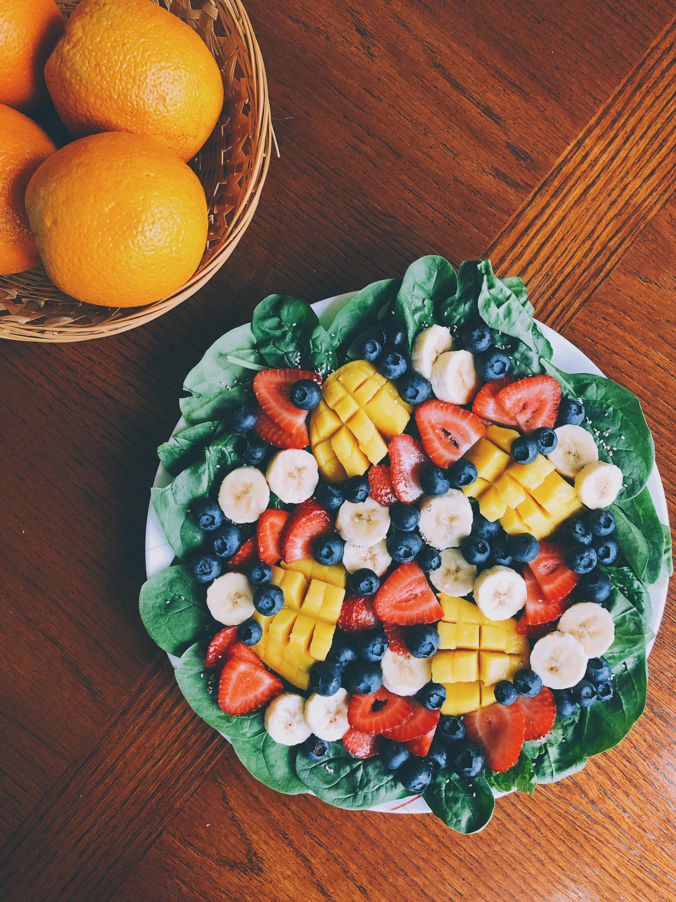
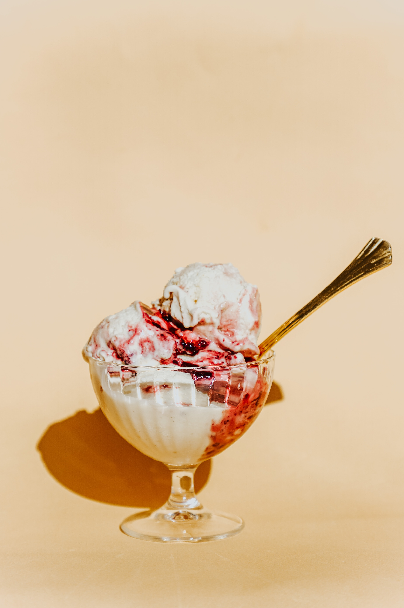

I have many favourite things, but pommes / hot chips / frites, however you want to call them, are probably one of my most beloved foods. Specifically hot, crispy curly fries with salt and freshly squeezed lemon juice.. absolute heaven for me.
When I lived in Australia, my diet consisted primarily of fruits. It was so readily available, mostly Australian grown and no matter the season, always a good variety!
I'm definitely someone that goes throug phases in fruits, so here a few of my most loved fruits in no particular order
I have to admit, I had to look up the correct name for 'Spaghetti with Tomato Sauce', not to be confused with 'Pasta with Ketchup'. Something eaten on occassion by my Grandmother... Something I will never understand A fresh tomato suace is so simple and delicious. I make probably once a fortnight, if not once a week. Keep it simple with
I guess Ice Cream isn't exaclty a food group as such.. but honestly, Ice Cream gives me life.
My Go-To flavours